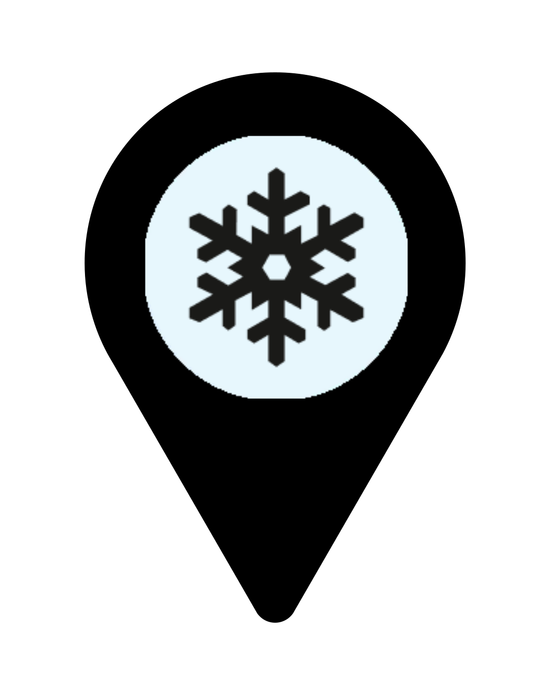
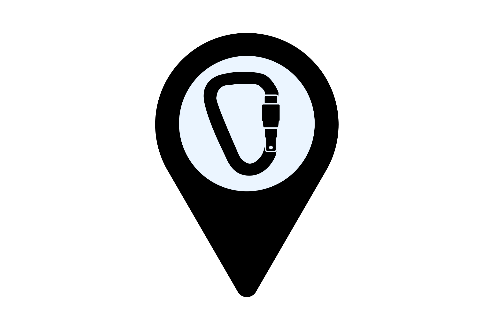

<!doctype html>
<html lang="de">
<head>
    <meta charset="utf-8">
    <title>ALPINE AWARENESS MAP</title>
    <meta name="viewport" content="width=device-width, initial-scale=1">
    
    <link rel="stylesheet" href="https://unpkg.com/leaflet@1.9.4/dist/leaflet.css" />
    <script src="https://unpkg.com/leaflet@1.9.4/dist/leaflet.js"></script>
    <script src="https://cdnjs.cloudflare.com/ajax/libs/PapaParse/5.3.0/papaparse.min.js"></script>

    <script src="data/OEBB_NETWORK_EDGES_2.js"></script>
    <script src="data/strecken_polyline_3.js"></script>

    <style>
        html, body, #map { width: 100%; height: 100%; padding: 0; margin: 0; background: #f0f0f0; }
        
        /* Design der Legende */
        .legend {
            background: white;
            padding: 10px;
            line-height: 1.5;
            border-radius: 5px;
            box-shadow: 0 0 15px rgba(0,0,0,0.2);
            font-family: sans-serif;
            font-size: 13px;
            color: #333;
        }
        .legend h4 { margin: 0 0 8px; font-size: 14px; border-bottom: 1px solid #ddd; padding-bottom: 3px; }
        .legend-item { display: flex; align-items: center; margin-bottom: 5px; }
        .legend-icon { width: 20px; height: 20px; margin-right: 8px; }

        /* Popup Styling */
        .popup-title { font-size: 14px; font-weight: bold; color: #333; margin-bottom: 5px; display: block; }
        .popup-date { color: #333; font-weight: bold; font-size: 12px; }
        .popup-info { font-style: italic; color: #555; margin-top: 5px; display: block; border-top: 1px solid #ddd; padding-top: 5px; }
    </style>
</head>
<body>
    <div id="map"></div>

    <script>
        var map = L.map('map').setView([47.26, 11.39], 7);

        // Graue Karte
        L.tileLayer('https://{s}.basemaps.cartocdn.com/light_all/{z}/{x}/{y}{r}.png', {
            attribution: '© OpenStreetMap © CartoDB',
            subdomains: 'abcd',
            maxZoom: 20
        }).addTo(map);

        // Gelbe Bahnlinien
        const lineStyle = { color: '#f0ff2d', weight: 2, opacity: 0.8 };
        if (typeof json_OEBB_NETWORK_EDGES_2 !== 'undefined') L.geoJson(json_OEBB_NETWORK_EDGES_2, {style: lineStyle}).addTo(map);
        if (typeof json_strecken_polyline_3 !== 'undefined') L.geoJson(json_strecken_polyline_3, {style: lineStyle}).addTo(map);

        // --- NEU: Legende hinzufügen ---
        var legend = L.control({position: 'topright'});

        legend.onAdd = function (map) {
            var div = L.DomUtil.create('div', 'legend');
            div.innerHTML = '<h4>Kategorien</h4>' +
                '<div class="legend-item"> Snow Camp</div>' +
                '<div class="legend-item"> Family Camp</div>' +
                '<div class="legend-item"> Women Power</div>' +
                '<div class="legend-item"> Bike Camp</div>' +
                '<div class="legend-item"> Climb Camp</div>' +
                '<div class="legend-item" style="margin-top:8px;"><span style="display:inline-block; width:20px; height:3px; background:#f0ff2d; margin-right:8px;"></span> Bahnnetz</div>';
            return div;
        };
        legend.addTo(map);

        // --- Google Sheets Daten laden ---
        const googleSheetUrl = 'https://docs.google.com/spreadsheets/d/e/2PACX-1vRgubvpjQe4h8QkLTlO3KojadPfkRtW7LbmIVEOwPso4Pvp6dF_fCSF0XRHnTQso9FcC_0xHtWg-Vx3/pub?output=csv';

        fetch(googleSheetUrl)
            .then(res => res.text())
            .then(csvText => {
                Papa.parse(csvText, {
                    header: true,
                    skipEmptyLines: true,
                    complete: function(results) {
                        results.data.forEach(function(row) {
                            let lat = parseFloat(row.lat);
                            let lon = parseFloat(row.lon);
                            
                            if (!isNaN(lat) && !isNaN(lon)) {
                                let typeRaw = (row.typ || "default").trim();
                                let type = typeRaw.toLowerCase().replace(/\s+/g, '');
                                let iconPath = 'markers/' + type + '.svg';

                                const customIcon = L.icon({
                                    iconUrl: iconPath,
                                    iconSize: [32, 32],
                                    iconAnchor: [16, 32],
                                    popupAnchor: [0, -32]
                                });

                                let popupInhalt = `
                                    <span class="popup-title">${row.name}</span>
                                    <span class="popup-date">${row.datum || ''}</span><br>
                                    <small>Kategorie: ${typeRaw}</small>
                                    ${row['Info für dich'] ? `<span class="popup-info">${row['Info für dich']}</span>` : ''}
                                `;

                                L.marker([lat, lon], {icon: customIcon})
                                    .addTo(map)
                                    .bindPopup(popupInhalt);
                            }
                        });
                    }
                });
            });
    </script>
</body>
</html>
